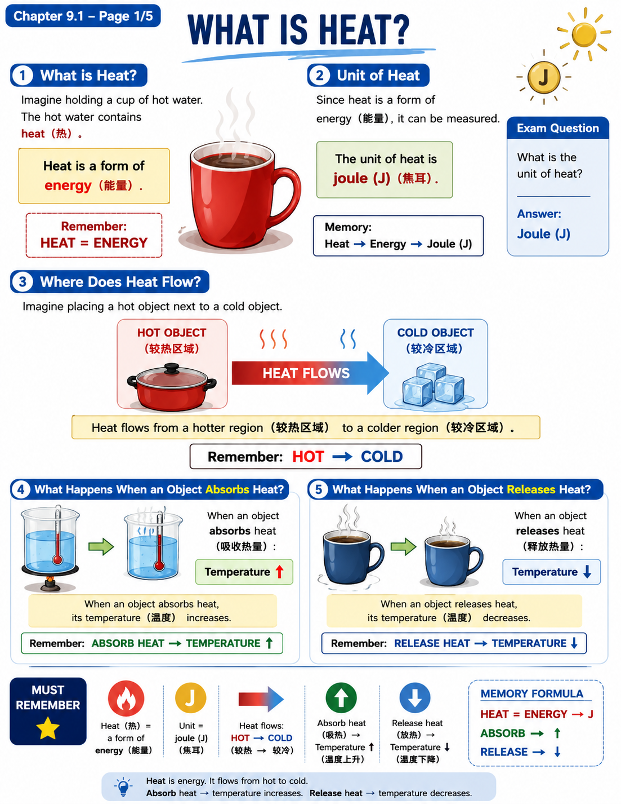
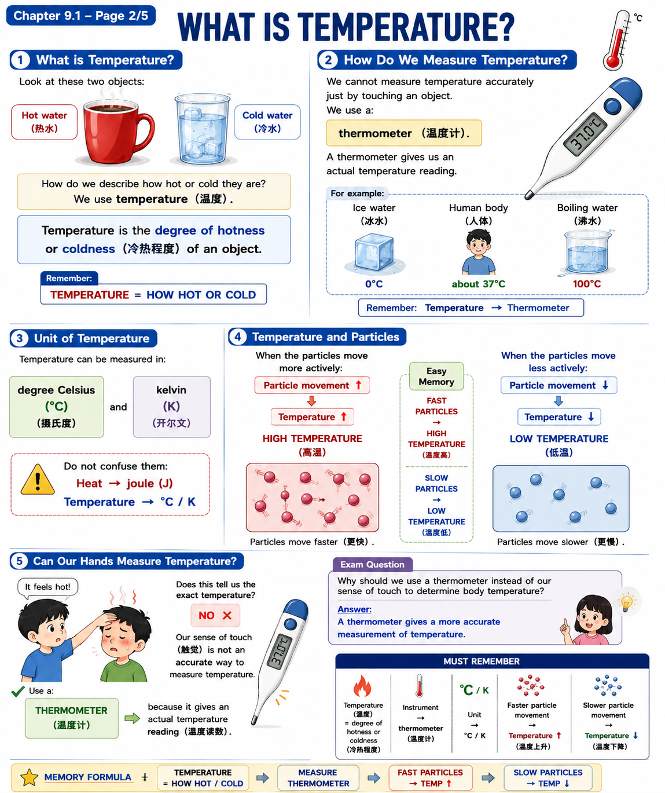
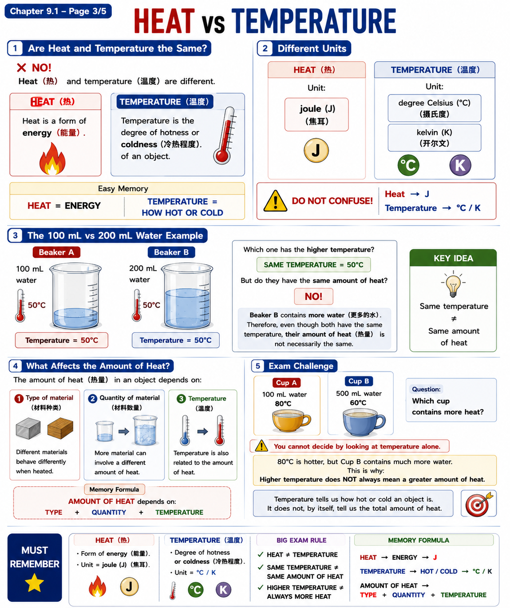
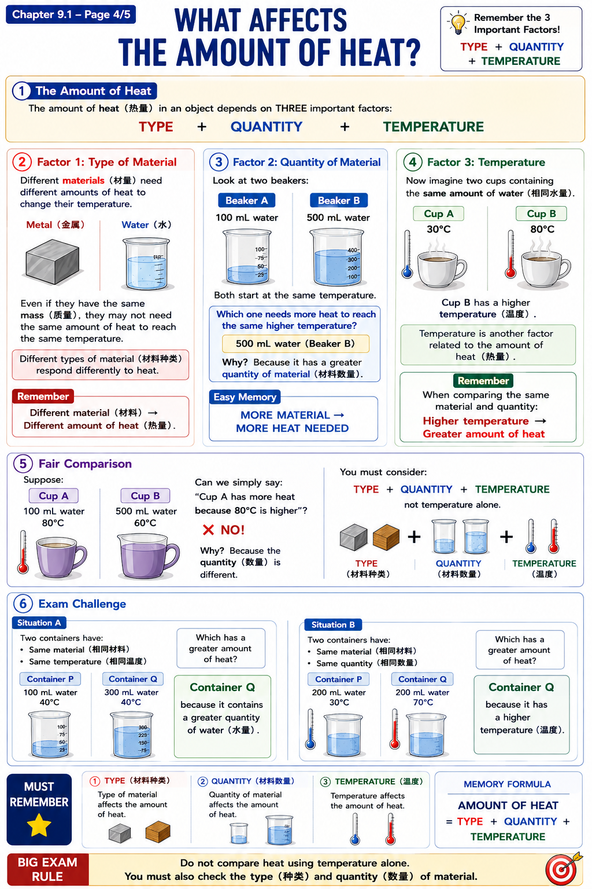
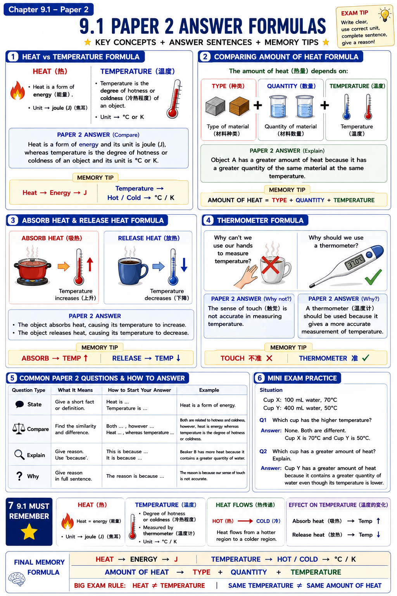

Page 1/5 · What is Heat?

Textbook ExplanationHeat（热） is a form of energy（能量）. Heat can be obtained from sources such as the Sun（太阳）, electrical appliances（电器） and the burning of fuel（燃烧燃料）.
Heat naturally flows from a hotter region（较高温区域） to a colder region（较低温区域）. The unit used to measure heat is joule (J).
Exam focus: If asked to define heat, write: “Heat is a form of energy.” If asked for its unit, answer joule (J).
HEAT = ENERGY · UNIT = J · HOT → COLD
Page 2/5 · What is Temperature?

Textbook ExplanationTemperature（温度） is a measure of the degree of hotness or coldness（冷热程度） of an object. It is measured using a thermometer（温度计） in °C or K.
Temperature changes according to the surroundings. When water is heated, its temperature increases. When ice cubes are placed around bottles of juice, the temperature of the juice decreases.
Temperature also depends on the degree of movement of particles（粒子的运动程度）. Greater particle movement means a higher temperature.
Exam focus: Do not define temperature as “heat”. Temperature tells how hot or cold an object is.
TEMP = HOTNESS / COLDNESS · THERMOMETER · °C / K
Page 3/5 · Heat vs Temperature

Textbook ExplanationHeat and temperature are related but not the same. Heat is energy and is measured in J. Temperature is the degree of hotness or coldness and is measured in °C or K.
The amount of heat depends on the type of material（材料种类）, quantity of material（材料数量） and temperature（温度）. Temperature, however, depends on the movement of particles（粒子运动）.
Exam focus: Two samples can have the same temperature but a different amount of heat because their quantities may be different.
HEAT ≠ TEMPERATURE · J ≠ °C/K
Page 4/5 · What Affects the Amount of Heat?

Textbook ExplanationThe amount of heat（热量） in an object is affected by three factors: type of material, quantity of material and temperature.
This means temperature alone is not enough to decide which object has more heat. For a fair comparison, you must also look at what material is used and how much of it is present.
For the same material at the same temperature, a greater quantity of material contains a greater amount of heat.
Exam focus: Before answering “Which has more heat?”, check TYPE + QUANTITY + TEMPERATURE. Do not simply choose the hotter object.
HEAT AMOUNT → TYPE + QUANTITY + TEMPERATURE
Page 5/5 · Formative Practice & Exam Review

Textbook Explanation1. S.I. unit of heat: joule (J).
2. Sense of touch（触觉）: It is not a reliable way to determine whether a person has fever because touch does not give an accurate temperature reading. A thermometer should be used.
3. 100 mL vs 200 mL water: When both samples are boiled under the same condition, their boiling temperature is the same, even though the quantities are different. A smaller mass of water does not take longer to boil under the same heating conditions; generally, less water needs less heat to reach the same temperature.
Paper 2 sentence: “The sense of touch is not reliable because it cannot measure temperature accurately. A thermometer gives an accurate temperature reading.”
UNIT = J · TOUCH ✗ · THERMOMETER ✓ · SAME BOILING TEMP